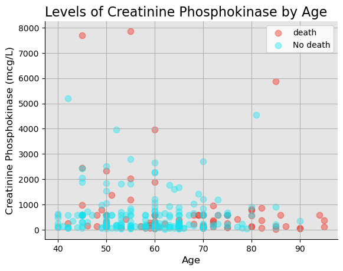
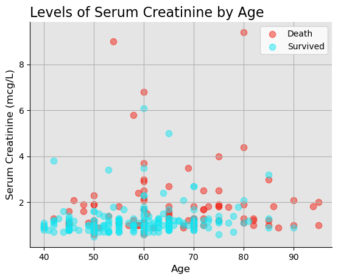

Cardiovascular diseases (CVDs) are the number 1 cause of death globally, taking an estimated 17.9 million lives each year, which accounts for 31% of all deaths worlwide. Heart failure is a common event caused by CVDs and this dataset contains 12 features that can be used to predict mortality by heart failure.
Most cardiovascular diseases can be prevented by addressing behavioural risk factors such as tobacco use, unhealthy diet and obesity, physical inactivity and harmful use of alcohol using population-wide strategies.
People with cardiovascular disease or who are at high cardiovascular risk (due to the presence of one or more risk factors such as hypertension, diabetes, hyperlipidaemia or already established disease) need early detection and management wherein a machine learning model can be of great help.
Indicates decrease of red blood cells or hemoglobin.
Creatinine Phosphokinase
mcg/L
It is an enzyme present in the heart, whose elevated levels in the bloodstream indicate muscle or cardiac damage.
Diabetes
Boolean
It is a chronic medical condition characterized by elevated blood sugar levels resulting from insufficient insulin production or the body’s inability to effectively use insulin.
Ejection Fraction
Percentage
It is a measure of the percentage of blood that the heart’s left ventricle pumps out with each contraction, providing an assessment of the heart’s pumping efficiency; a lower EF may indicate heart dysfunction or failure.
Blood Pressure
Boolean
Blood pressure is the force exerted by circulating blood against the walls of arteries.
Platelets
kiloplatelets/mL
platelets help prevent excessive bleeding by forming blood clots at the site of vascular injury.
Serum Creatinine
mg/dL
Serum creatinine is a waste product generated by muscle metabolism that is filtered out of the blood by the kidneys.
Serum Sodium
mEq/L
Serum sodium refers to the concentration of sodium ions in the liquid component of blood.
Sex
Binary (0 for women, 1 for men)
The sex of the patient.
Smoking
Boolean
If the patient smokes actively or ever did in past.
Time
Time in months
It is the time of the patient’s follow-up visit for the disease in months.
1.3 Packages and Dependencies
Code
import pandas as pdimport numpy as npimport matplotlib.pyplot as pltimport seaborn as snsimport plotly.express as pxfrom sklearn.model_selection import train_test_splitfrom sklearn.preprocessing import StandardScalerfrom sklearn.linear_model import LogisticRegressionfrom sklearn.svm import SVCfrom sklearn.neighbors import KNeighborsClassifierfrom sklearn.tree import DecisionTreeClassifierfrom sklearn.naive_bayes import GaussianNBfrom sklearn.ensemble import RandomForestClassifierfrom sklearn.metrics import accuracy_scoreimport tensorflow as tf
# Plotting the pie chartplt.figure(figsize=(10, 6))plt.pie(death_counts_df['Counts'], labels=death_counts_df['Conditions'], autopct='%1.1f%%', startangle=90)plt.title('Death Counts for Different Conditions')plt.show()
Code
plt.figure(figsize=(10, 6))plt.hist(death_counts_df['Counts'])#, labels=death_counts_df['Conditions'], autopct='%1.1f%%', startangle=90)plt.title('Death Counts for Different Conditions')plt.show()
Code
df_cleaned[df_cleaned["age"] >85]
age
anaemia
creatinine_phosphokinase
diabetes
ejection_fraction
high_blood_pressure
platelets
serum_creatinine
serum_sodium
sex
smoking
time
death_event
5
90.0
1
47
0
40
1
204000.00
2.10
132
1
1
8
1
16
87.0
1
149
0
38
0
262000.00
0.90
140
1
0
14
1
26
95.0
1
112
0
40
1
196000.00
1.00
138
0
0
24
1
30
94.0
0
582
1
38
1
263358.03
1.83
134
1
0
27
1
36
90.0
1
60
1
50
0
226000.00
1.00
134
1
0
30
1
55
95.0
1
371
0
30
0
461000.00
2.00
132
1
0
50
1
119
86.0
0
582
0
38
0
263358.03
1.83
134
0
0
95
1
289
90.0
1
337
0
38
0
390000.00
0.90
144
0
0
256
0
3.3.1 Age and Creatinine Phosphokinase
Code
# Creating a scatter plot of Creatinine Phosphokinase levels by AgeFigure2, Axes2 = plt.subplots()Axes2.scatter(df_cleaned[df_cleaned["death_event"] ==1]["age"], df_cleaned[df_cleaned["death_event"] ==1]["creatinine_phosphokinase"], s =55, c = red, alpha =.4, label ="death")Axes2.scatter(df_cleaned[df_cleaned["death_event"] ==0]["age"], df_cleaned[df_cleaned["death_event"] ==0]["creatinine_phosphokinase"], s =55, c = blue, alpha =.4, label ="No death")# Theme for plot Axes2.set_facecolor(light_gray_1)Axes2.spines["top"].set_visible(False)Axes2.spines["right"].set_visible(False)Axes2.yaxis.set_tick_params(labelsize =10)Axes2.xaxis.set_tick_params(labelsize =10)# Title and labelsplt.title(label ="Levels of Creatinine Phosphokinase by Age", loc ="left", fontsize =16)plt.ylabel(ylabel ="Creatinine Phosphokinase (mcg/L)", fontsize =12)plt.xlabel(xlabel ="Age", fontsize =12)plt.grid()plt.legend()plt.savefig(fname ="./Images/Figure2", dpi =400)plt.show()
3.3.2 Age and Serum Creatinine
Code
# Creating a scatter plot of serum creatinine levels by AgeFigure3, Axes3 = plt.subplots()Axes3.scatter(df_cleaned[df_cleaned["death_event"] ==1]["age"], df_cleaned[df_cleaned["death_event"] ==1]["serum_creatinine"], s =55, c = red, alpha =.5, label ="Death")Axes3.scatter(df_cleaned[df_cleaned["death_event"] ==0]["age"], df_cleaned[df_cleaned["death_event"] ==0]["serum_creatinine"], s =55, c = blue, alpha =.5, label ="Survived")# Theme for plot Axes3.set_facecolor(light_gray_1)Axes3.spines["top"].set_visible(False)Axes3.spines["right"].set_visible(False)Axes3.yaxis.set_tick_params(labelsize =10)Axes3.xaxis.set_tick_params(labelsize =10)# Title and labelsplt.title(label ="Levels of Serum Creatinine by Age", loc ="left", fontsize =16)plt.ylabel(ylabel ="Serum Creatinine (mcg/L)", fontsize =12)plt.xlabel(xlabel ="Age", fontsize =12)plt.grid()plt.legend()plt.savefig(fname ="./Images/Figure3", dpi =400)plt.show()

3.3.3 Age and Serum Sodium
Code
# Creating a scatter plot of serum creatinine levels by AgeFigure4, Axes4 = plt.subplots()Axes4.scatter(df_cleaned[df_cleaned["death_event"] ==1]["age"], df_cleaned[df_cleaned["death_event"] ==1]["serum_sodium"], s =55, c = red, alpha =.5, label ="death")Axes4.scatter(df_cleaned[df_cleaned["death_event"] ==0]["age"], df_cleaned[df_cleaned["death_event"] ==0]["serum_sodium"], s =55, c = blue, alpha =.5, label ="No death")# Theme for plot Axes4.set_facecolor(light_gray_1)Axes4.spines["top"].set_visible(False)Axes4.spines["right"].set_visible(False)Axes4.yaxis.set_tick_params(labelsize =10)Axes4.xaxis.set_tick_params(labelsize =10)# Title and labelsplt.title(label ="Levels of Serum Creatinine by Age", loc ="left", fontsize =16)plt.ylabel(ylabel ="Serum Creatinine (mcg/L)", fontsize =12)plt.xlabel(xlabel ="Age", fontsize =12)plt.grid()plt.legend()plt.savefig(fname ="./Images/Figure4", dpi =400)plt.show()

3.4 Multivarient Analysis
3.4.1 Mortality and Survival Among Smokers
Code
# Calculating male smoker death events and survivorsmale_smoker_death= ((df_cleaned["death_event"] ==1) & (df_cleaned["sex"] ==1) & (df_cleaned["smoking"] ==1)).sum()male_smoker_survivors = ((df_cleaned["death_event"] ==0) & (df_cleaned["sex"] ==1) & (df_cleaned["smoking"] ==1)).sum()# Calculating female smoker death events and survivorsfemale_smoker_death = ((df_cleaned["death_event"] ==1) & (df_cleaned["sex"] ==0) & (df_cleaned["smoking"] ==1)).sum()female_smoker_survivors = ((df_cleaned["death_event"] ==0) & (df_cleaned["sex"] ==0) & (df_cleaned["smoking"] ==1)).sum()# Creating a DataFrame to display the resultssmoker_df = pd.DataFrame({'Male_Smoker_Death': [male_smoker_death],'Female_Smoker_Death': [female_smoker_death],'Male_Smoker_Survivors': [male_smoker_survivors],'Female_Smoker_Survivors': [female_smoker_survivors]})smoker_df
Unable to display output for mime type(s): application/vnd.plotly.v1+json
3.4.2 Mortality and Survival Diabetes and High Blood Pressure Patients
Code
# Multi variant analysis for patients who have diabetes as well as high blood pressurediabetes_high_bp_deaths= ((df_cleaned["death_event"] ==1) & (df_cleaned["diabetes"] ==1) & (df_cleaned["high_blood_pressure"] ==1)).sum()diabetes_high_bp_survivors= ((df_cleaned["death_event"] ==0) & (df_cleaned["diabetes"] ==1) & (df_cleaned["high_blood_pressure"] ==1)).sum()diabetes_high_bp_df = pd.DataFrame({'Diabetes_High_BP_Deaths': [diabetes_high_bp_deaths],'Diabetes_High_BP_Survivors': [diabetes_high_bp_survivors] })diabetes_high_bp_df
Diabetes_High_BP_Deaths
Diabetes_High_BP_Survivors
0
17
26
Code
# ploting donut chart for diabetes_high_bp_df deaths = diabetes_high_bp_df['Diabetes_High_BP_Deaths']survivors = diabetes_high_bp_df['Diabetes_High_BP_Survivors']# Create a donut chartfig, ax = plt.subplots(figsize=(8, 8))ax.pie([deaths.sum(), survivors.sum()], labels=['Deaths', 'Survivors'], autopct='%1.1f%%', startangle=90, wedgeprops=dict(width=0.3))# Draw a circle in the center to create a donut chartcentre_circle = plt.Circle((0,0),0.70,fc='white')fig = plt.gcf()fig.gca().add_artist(centre_circle)# Equal aspect ratio ensures that the pie is drawn as a circle.ax.axis('equal') plt.title('Diabetes and High Blood Pressure Counts for Deaths and Survivors')plt.show()
# compile the Sequential model together and customize metricsnn_model.compile(loss="binary_crossentropy", optimizer="adam", metrics=["accuracy"])
Code
# Fit the model to the training datafit_model = nn_model.fit(x_train_scaled, y_train, epochs=100)
RuntimeError: You must compile your model before training/testing. Use `model.compile(optimizer, loss)`.
Code
# Evaluate the model using the test datamodel_loss, model_accuracy = nn_model.evaluate(x_test_scaled,y_test,verbose=2)print(f"Loss: {model_loss}, Accuracy: {model_accuracy}")
Davide Chicco, Giuseppe Jurman: Machine learning can predict survival of patients with heart failure from serum creatinine and ejection fraction alone. BMC Medical Informatics and Decision Making 20, 16 (2020). (link)